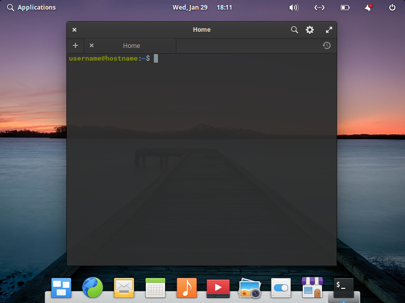
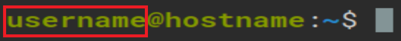
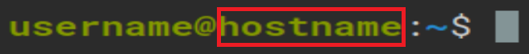
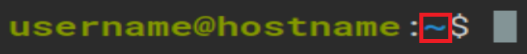

How to use the terminal
The terminal window, also referred to as a terminal emulator, is a text-only window in a graphical user interface (GUI) that emulates a console.
Opening the terminal:
There are two ways to open the terminal:
- Press Windows Key + T (Command key in the case of a Mac)
- Click on the terminal icon in the applications menu
Terminal Window:
This is what a terminal window looks like:
The common prompt structure contains the following information:
-
User Name:
 -
System Name:
 -
Current Directory:

For a demonstration, check out how you can customize your elementary OS using elementary-tweaks.